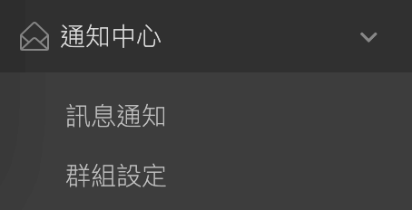
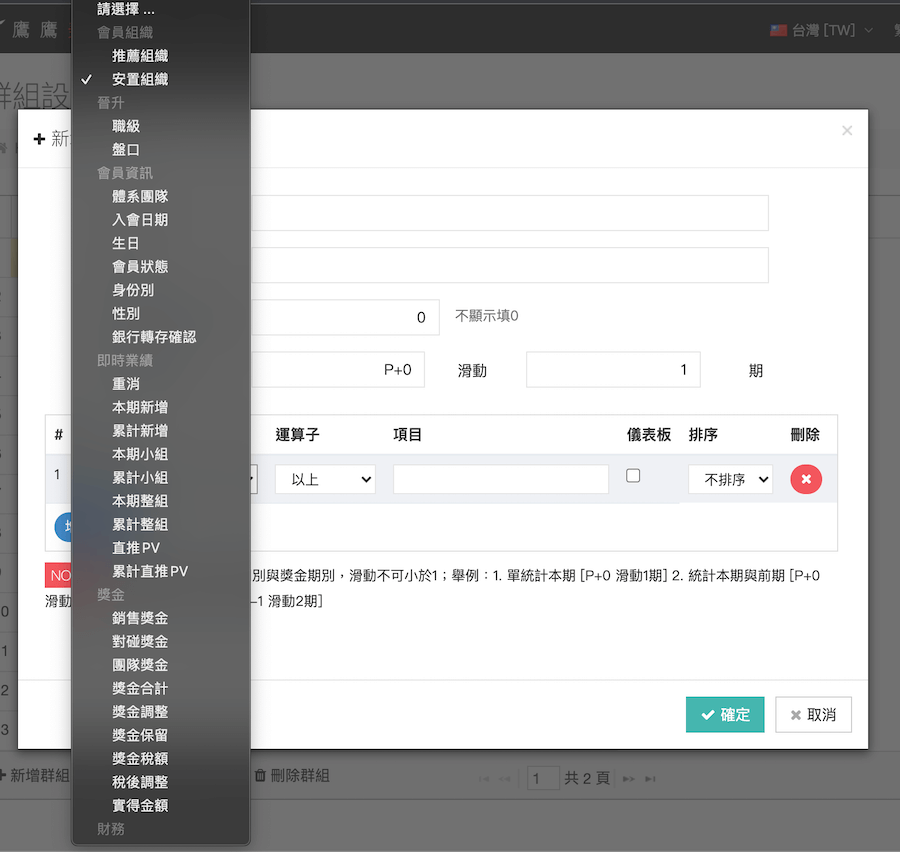

背景
其實原本的需求只是做個能集中控制所有通知方式的區塊，包含Mail, SMS, Push Notification, 站內信。但當時時程比較寬鬆，所以我就建議能加入通知群組(畫面上的群組設定)的功能，因為我們行業的特性，要能被搜索的元素較多也較複雜。如果可以依照不同搜尋條件動態設定，應該會很實用。於是誕生了這個系統。

通知群組其實也可以用在非常多的地方，不僅僅在於通知。也能應用於行銷模組，透過本模組篩選出會員，讓優惠方案適得其所。
真正走向CRM是未來的規劃之一。
設定群組

套用於通知